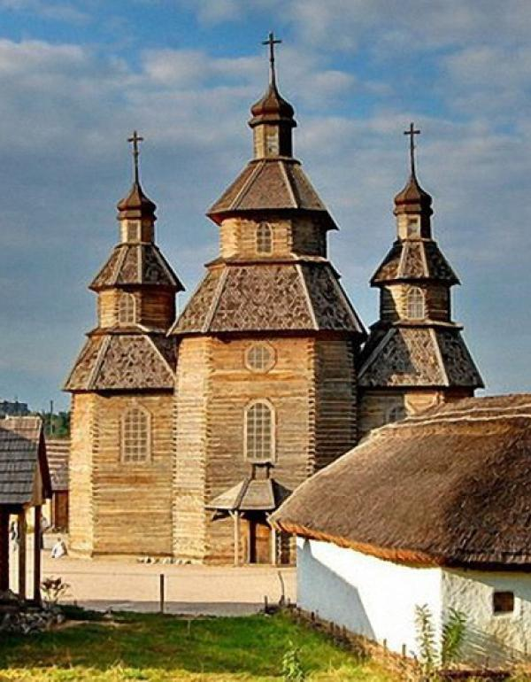
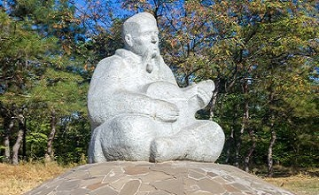
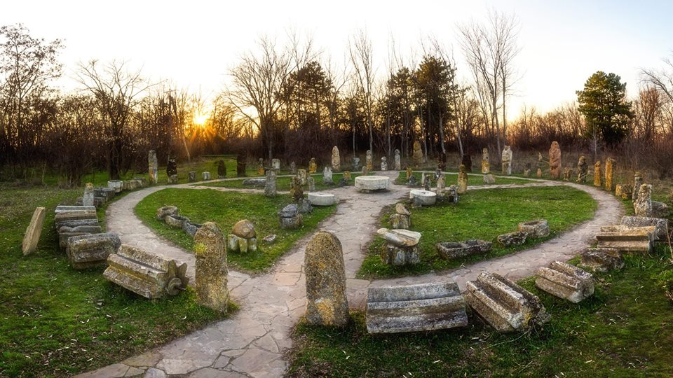
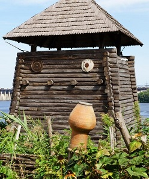
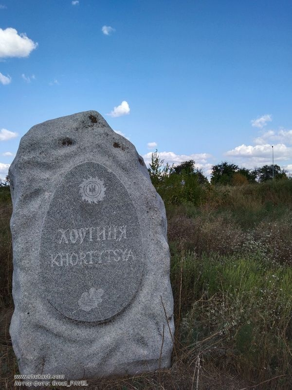

- Планування
- Подорож
- Хортиця
- Історія
- Враження
«Хортиця – це символ нескореності українського народу»
Останні кілька років змусили багатьох з нас шукати альтернативи звичному відпочинку. Цього літа ми з татом вирішили дослідити мальовничий острів Хортиця в Запоріжжі, занурившись в атмосферу козацької Січі.
З раннього дитинства я обожнюю подорожі з батьками. Це завжди довгоочікувана подія, що дарує море позитивних емоцій. Раніше ми переважно відпочивали на приморських курортах, добираючись до моря поїздом чи автобусом. Спостерігати за зміною краєвидів за вікном, відчувати подих південного клімату - це неймовірні відчуття. Згодом ми перейшли на подорожі машиною, і одні й ті самі місця почали відкриватися з нового ракурсу.
Плануючи поїздку на Хортицю, ми одразу визначили пріоритети. Цього разу планування подорожі відрізнялося. Інтернет не був потрібен, адже ми прагнули до єднання з історією та природою. На першому місці стояли найвідомі історичні пам'ятки культури: музей історії запорізького козацтва та історико-культурний комплекс "Запорізька Січ". На другому місці було підкоренняся красі та величі природних пейзажів, що оточують цей місце. Ми вирушили на прогулянки по живописних стежках, насичених ароматами квітів, спогадів про козацьку велич та звуками живої природи.
Наша подорож на Хортицю почалася з раннього ранку. Ще в місті, що спало, ми покинули дім та вирушили на автобусну зупинку. Нас чекала захоплива мандрівка до колиски українського козацтва. Погода була прекрасною: лагідний теплий день і безхмарне небо піднімали настрій. Автобус швидко проніс нас повз мальовничі краєвиди Дніпра. Невдовзі ми дісталися Хортиці. Вийшовши з автобуса, відчули свіжий річковий повітря. Перед нами розкрилися величні дніпровські пороги, сповнені легенд і козацької слави. Вражені красою острова, ми з нетерпінням пішли на зустріч пригодам.
   Острів Хортиця вразив нас своїми розмірами та красою, пронизуючи кожен куточок цього місця неповторною атмосферою козацької вольниці. Спочатку ми відвідали історико-культурний комплекс "Запорозька Січ", де ми побачили, як жили та готувалися до боротьби козаки. Потім, екскурсія в музеї допомогла нам збагатитися новими знаннями про історію українського козацтва та його внесок у формування національної ідентичності. Після цього ми вирішили насолодитися природними красами острова. З кургану ми насолоджувалися видом на Дніпро, а також відвідали скелю Тризуб, що є символом України.
На обіді ми влаштували пікнік на березі Дніпра, розстеливши покривало та розмістивши атрибутику для трапези під відкритим небом. Ласували смачними стравами, спілкувалися та насолоджувалися атмосферою природи. Після обіду ми трохи погуляли по острову, насолоджуючись кожним моментом, що подарувала нам Хортиця. Але наближалася пора повертатися додому. Дорога назад пройшла не так легко, як ми сподівалися, адже тривалий день на свіжому повітрі дещо втомив нас. Проте, навіть у втомленому стані, ми залишалися щасливими та сповненими позитивних емоцій від цього дня, проведеного в такому чудовому місці.
© 2024 Усі права захищені